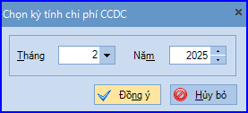
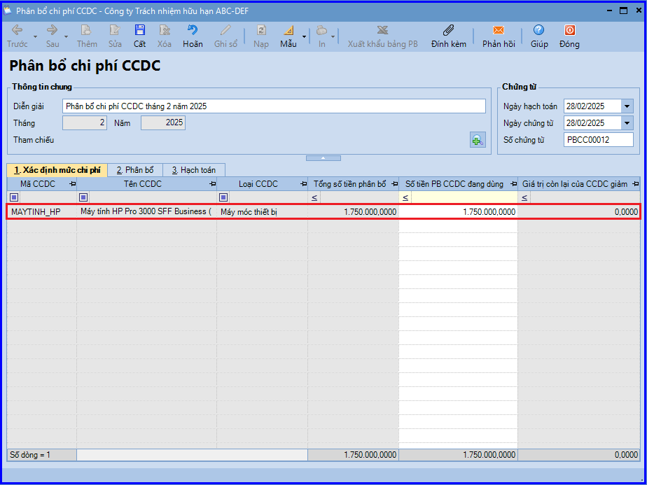
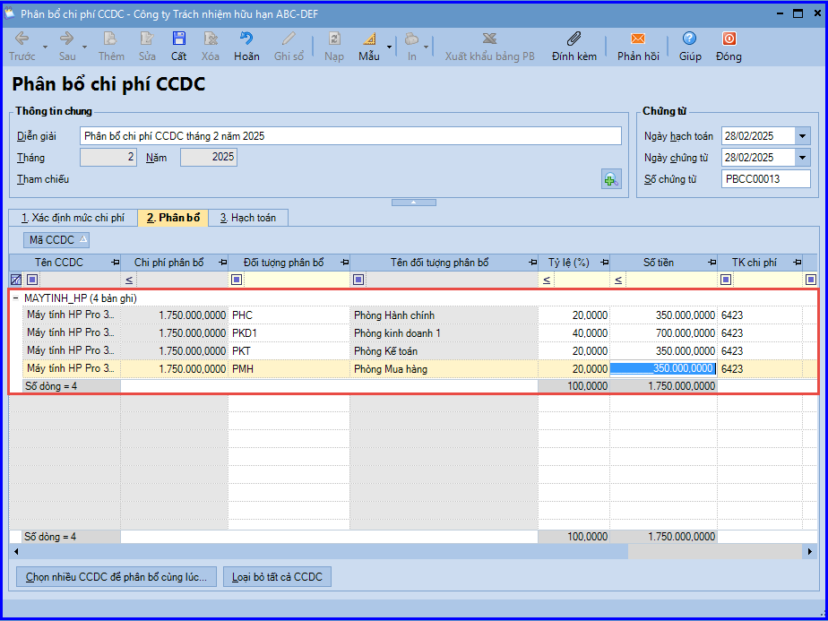
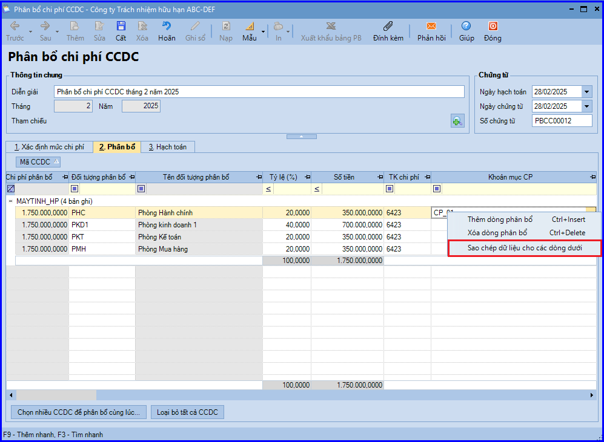
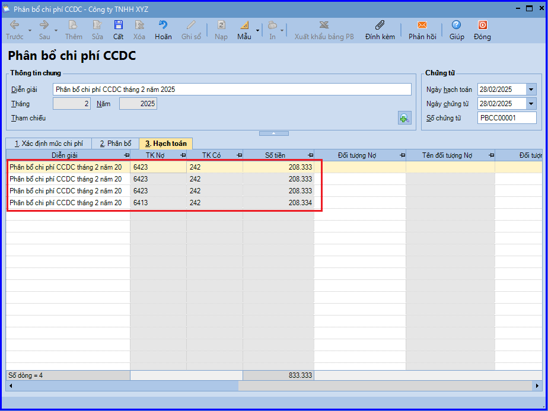

Hướng dẫn lập chứng từ phân bổ giá trị của CCDC vào chi phí hàng tháng, đồng thời hạch toán chi phí vào các đối tượng phân bổ trên phần mềm Misa
Hàng tháng kế toán cần hạch toán công cụ dụng để để chuyển giá trị của công cụ vào chi phí kinh doanh của doanh nghiệp nên việc phân bổ hợp lý sẽ giúp kết toán dễ dàng hơn trong việc quản lý.
Nhiều cách để phân loại công cụ dụng cụ nhưng phương pháp để phân bổ khoa học nhất là theo phương pháp phân bổ.
Nhiều cách để phân loại công cụ dụng cụ nhưng phương pháp để phân bổ khoa học nhất là theo phương pháp phân bổ.
Theo điều 26 Thông tư 200/2014/TT-BTC và điều 25 Thông tư 133/2016/TT-BTC quy định:
đ) Đối với các công cụ dụng cụ có giá trị nhỏ khi xuất dùng cho sản xuất, kinh doanh phải ghi nhận toàn bộ một lần vào chi phí sản xuất, kinh doanh.
e) Trường hợp công cụ, dụng cụ, bao bì luân chuyển, đồ dùng cho thuê xuất dùng hoặc cho thuê liên quan đến hoạt động sản xuất kinh doanh trong nhiều kỳ kế toán thì được ghi nhận vào tài khoản 242 – Chi phí trả trước và phân bổ dần vào chi phí sản xuất, kinh doanh.
1. Các phương pháp phân bổ CCDC:
* Phân bổ 1 lần (100% giá trị của CCDC):
Vì có giá trị nhỏ và thời gian sử dụng không lâu nên chi phí được đưa thẳng vào chi phí của doanh nghiệp. Và chúng được coi là loại công cụ dụng cụ không cần phân bổ. Như găng tay, quần áo, tua vít, búa….. Những tài sản này phải liên quan đến hoạt động sản xuất. Được ghi một lần vào chi phí sản xuất kinh doanh.
* Phân bổ nhiều lần :
Loại phân bổ này được áp dụng đối với những công cụ dụng cụ có giá trị lớn; và thời gian phân bổ dài. Tùy thuộc vào mục đích sử dụng của chúng nên được chia thành hai nhóm chính; là phân bổ 2 lần và phân bổ nhiều lần. Với loại phân bố 2 lần thì mỗi lần phân bổ sẽ có thời gian phân bổ. thường với loại phân bổ hai lần thì sẽ được chia thành 2 phần bằng nhau. Với loại phân bổ nhiều lần thì tùy vào khối lượng công việc và hạn sử dụng của công cụ dụng cụ thì được chia thành nhiều phần khác nhau nhưng không được quá 36 tháng. Theo thông tư 45/2013 thì giá trị của dụng cụ được chia đều cho số kỳ đăng ký phân bổ, mỗi kì được hiểu là 1 tháng trong chu kì 12 tháng. Và những Tài sản cố định không đủ ghi nhận là công cụ dụng cụ sẽ phải được hạch toán và chuyển thành Công cụ dụng cụ.
Kế toán cần căn cứ vào thời gian và giá trị sử dụng để dự kiến, lên lịch trình rõ ràng để phân bố Công cụ dụng sao cho hợp lý và kịp thời.
Ví dụ : một công cụ dụng cụ có thời hạn sử dụng là 6 tháng và Nếu đưa vào sử dụng với số lượng hàng thì chỉ cần dùng một nửa số Công cụ dụng cụ đó. Kế toán sẽ phân chia công cụ dụng cụ đó thành 2 phần và phân bố sao cho tận dụng tối đa công cụ dụng cụ đó.
2. Thời gian phân bổ công cụ dụng cụ:
Thông tư 96/2015/TT-BTC tại Điều 4. Sửa đổi, bổ sung Điều 6 Thông tư số 78/2014/TT-BTC (đã được sửa đổi, bổ sung tại Khoản 2 Điều 6 Thông tư số 119/2014/TT-BTC và Điều 1 Thông tư số 151/2014/TT-BTC) như sau:
“Đối với tài sản là công cụ, dụng cụ, bao bì luân chuyển, … không đáp ứng đủ điều kiện xác định là tài sản cố định theo quy định thì chi phí mua tài sản nêu trên được phân bổ dần vào chi phí hoạt động sản xuất kinh doanh trong kỳ nhưng tối đa không quá 3 năm.”
=> Như vậy: Doanh Nghiệp nên xác định thời gian phân bổ CCDC tối đa là 3 năm theo pháp luật thuế. DN tự xác định thời gian phân bổ CCDC đảm bảo cho doanh thu phù hợp với chi phí và tùy thuộc vào thời gian sử dụng hữu ích của tài sản. Việc phân bổ dần chi phí mua tài sản là CCDC vào chi phí hoạt động sản xuất kinh doanh trong kỳ tính theo tháng kể từ ngày đưa vào sử dụng.
3. Các bước thực hiện phân bổ CCDC trên phần mềm Misa
- Tại phân hệ "Công cụ dụng cụ" => chọn chức năng "Phân bổ chi phí" bên thanh tác nghiệp (hoặc trên tab "Phân bổ chi phí" => chọn chức năng "Thêm").
- Chọn tháng và năm cần phân bổ CCDC, sau đó ấn "Đồng ý".

- Kiểm tra lại thông tin chi phí CCDC được hệ thống tự động phân bổ:
+ Tab "Xác định mức chi phí" => hệ thống tự động tính ra số tiền phân bổ cho các CCDC đang được sử dụng tại đơn vị.

+ Tab "Phân bổ" => liệt kê chi phí sẽ được phân bổ cho các đối tượng nào, theo tỷ lệ phân bổ đã được thiết lập khi ghi tăng CCDC.

CHÚ Ý:
a. Có thể thiết lập phân bổ cho nhiều CCDC cùng lúc bằng cách nhấn chọn chức năng "Chọn nhiều CCDC để phân bổ cùng lúc"
b. Trường hợp sử dụng tính năng "Loại bỏ tất cả CCDC" để xóa hết các dòng phân bổ sau đó muốn lấy lại thì phải đóng chứng từ phân bổ và mở lại.
c. Trường hợp các CCDC được phân bổ cho cùng một khoản mục chi phí, kế toán có thể nhập nhanh thông tin bằng cách chọn khoản mục chi phí cho đối tượng phân bổ đầu tiên, sau đó ấn chuột phải và chọn chức năng "Sao chép dữ liệu cho các dòng dưới".

+ Tab "Hạch toán": liệt kê các bút toán hạch toán nghiệp vụ phân bổ chi phí CCDC.

- Sau khi kiểm tra phân bổ CCDC, ấn "Cất".
- Chọn chức năng "In" trên thanh công cụ => sau đó chọn mẫu cần in. Có thể theo mẫu do phần mềm cung cấp hoặc theo mẫu đặc thù của doanh nghiệp (xem thêm chức năng "Thiết kế mẫu chứng từ").
CHÚ Ý:
a. Đối với dữ liệu hạch toán đa chi nhánh và sử dụng cả hai hệ thống sổ (tài chính và quản trị), việc phân bổ chi phí CCDC được thực hiện khi đang làm việc tại chi nhánh nào, sổ nào chỉ được lưu trên chi nhánh đó và sổ đó.
b. Có thể xuất khẩu thông tin phân bổ chi phí CCDC ra tệp excel bằng cách chọn chức năng "Xuất khẩu bảng PB" trên thanh công cụ.
KẾ TOÁN DIỆU TÂM chúc các bạn làm tốt!
=============================
Nếu bạn muốn thành thạo các kỹ năng làm kế toán trên phần mềm Misa
Thì bạn có thể tham khảo "Khóa Học Thực Hành Kế Toán Trên Phần Mềm Misa" tại Công ty đào tạo Kế Toán Diệu Tâm
Trong khóa học này, bạn sẽ được dạy cách lên sổ sách, lập báo cáo tài chính trên phần mềm Misa
Chi tiết về chương trình đào tạo bạn xem tại đây nhé: Khóa học thực hành kế toán trên Misa
=============================
=============================
Nếu bạn muốn thành thạo các kỹ năng làm kế toán trên phần mềm Misa
Thì bạn có thể tham khảo "Khóa Học Thực Hành Kế Toán Trên Phần Mềm Misa" tại Công ty đào tạo Kế Toán Diệu Tâm
Trong khóa học này, bạn sẽ được dạy cách lên sổ sách, lập báo cáo tài chính trên phần mềm Misa
Chi tiết về chương trình đào tạo bạn xem tại đây nhé: Khóa học thực hành kế toán trên Misa
=============================